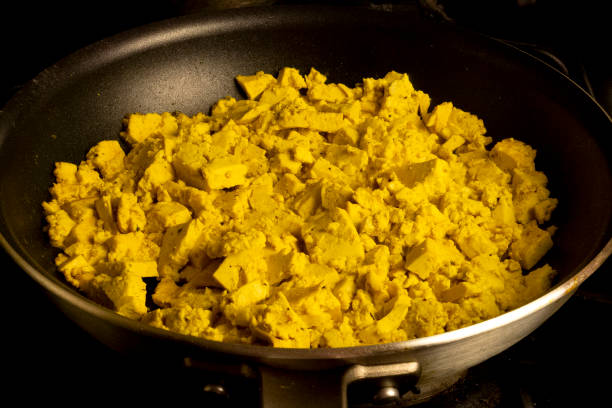

Tofu Tikki Masala Recipe

Easy to Make Vegan Tofu Masala
Vegan Tikka Masala is so easy to make and best serve with vegan naan. Featuring "chicken-style" tofu and a perfectly spiced, creamy sauce, this popular dish just got the best vegan makeover! I love this method of cooking tofu; it has a unique texture and delicious flavor. When paired with a spicy, creamy masala sauce it is simply incredible.
Ingredients
- 2 (16-ounce) blocks extra-firm tofu
- 4 tablesppon olive oil
- 2 tablespoons cornstarch
- 1 1/2 teaspoon salt
- 1 large onion, diced
- 5 clove garlic, minced
- 1 tablespoon fresh grated ginger
- 1 1/2 teaspoon garam masala
- 1 teaspoon turmeric
- 1 1/2 teaspoon ground cumin
- 1 teaspoon coriander
- 1/4 teaspoon cayenne pepper
- 14 ounces tomato sauce
- 1 (13.5 ounce) can full fat coconut milk
- 4 1/4 cup water
- 4 cups of cooked brown rice
- chopped cilantro